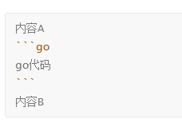
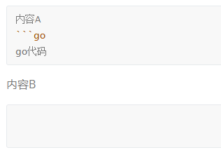

斜体
效果：这是斜体
1 | _这是斜体_ |
粗体
效果：粗体
1 | __粗体__ |
斜粗体
斜粗体
1 | ___粗体___ |
引用
引用的效果就是这样
<–左边出现这个东西
引用的引用
还能引
1 | >引用的效果就是这样 |
引用用途举例：
用户反馈
希望增加夜间模式功能，当前亮度太刺眼。
希望策划去死
开发团队回复
该功能已排期，预计下版本发布。
链接
这是一个链接 方括号+圆括号
1 | [这是一个链接](https://zciszrry.github.io) |
或者：https://zciszrry.github.io 用了尖括号
1 | 或者：<https://zciszrry.github.io> |
列表
- 无序列表可用* + - 带空格
- 使用Tab进行缩进
- 有序列表就是数字带点加空格
- 使用Tab缩进
1 | * 无序列表 |
分割线
1 | ---或者*** |
删除线
删除的文字
1 | ~~删除的文字~~ |
下划线
下划线
1 | <u>下划线</u> |
代码块
行内代码块用 单 `包围
1 | ``` |
💡 提示：如何优雅地嵌套代码块 例如，你打下如下md代码：
2
3
4
5
6
7
内容A
```go
go代码
```
内容B
```期望得到的效果：

实际得到的效果：

原因也很简单，渲染器解析时并不知道你有多少个代码块，只会按距离最近的反引号进行匹配。
解决方法也很简单，区分外围和内围即可。如：
2
3
4
5
6
7
内容A
```go
go代码
```
内容B
~~~或者(是的，反引号以及波浪号时可以大于三个)：
2
3
4
5
6
7
内容A
```go
go代码
```
内容B
````另外，Typora会自动改变源码来区分内外围，可打开源码模式进行观察。
表格
| 表格 | 是吗 |
|---|---|
| 用 | 来做表头 | 用—分割表头和表项 |
脚注
试试脚注1
1 | 试试脚注[^1] |
待办事项/任务列表
待办事项：
1 | 待办事项： |
公式块
E = mc2
1 | $$ |
💡 提示：让公式正确显示
公式块本身不属于markdown标准语法，上面的写法其实是LaTex数学模式的标准分隔符，且网页本身无法解析LaTex公式。
标准Markdown渲染器不认识公式块，会将其原封不动地转换为 HTML 中的普通文本。
若静态网页生成（如Hexo)和客户端浏览器都没有进行数学公式渲染，那么用户最终只能在网页上看到公式块源码。
Hexo（本文所用框架）默认的Markdown渲染器和LaTex语法有冲突，解决参考：数学方程式 | 下一个。
脚注内容↩︎